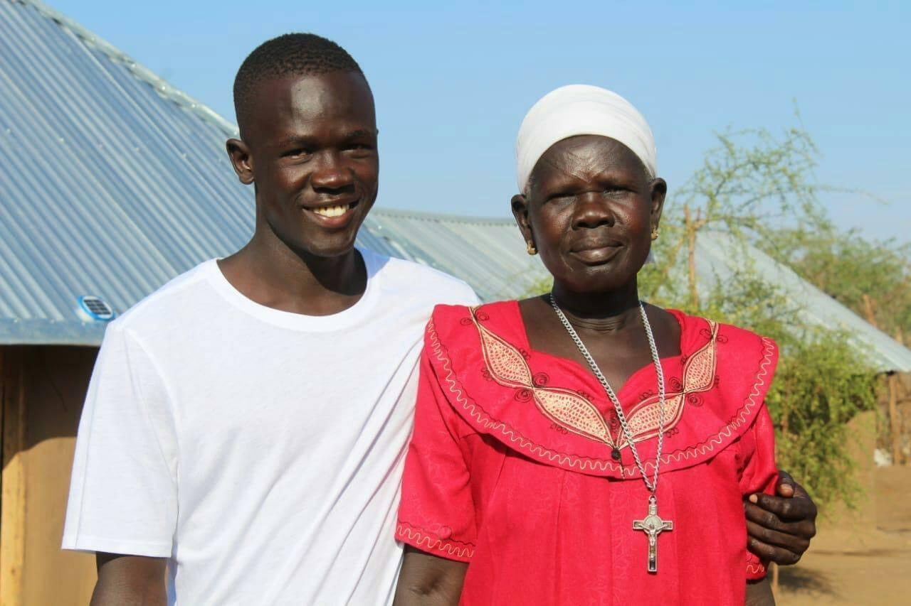

Dr. Garang Deng
A Great Computer Scientist Of All Times.

Dr. Garang Deng smiling while holding his mother.
Dr. Garang Biography.
- 1997. He was born in South Sudan, in a small village callNimuli.
- 2000. He started his pre-primary at Gilo, kakuma
- 2013. He finished his kenya certificate of Primary Education(K.C.S.E) in Fashoda Boys Primary School, and managed to score 308 marks.
- 2015. He joined Anestar in Nakuru and left in 2017 at form 3.
- 2018. After one year of staying home, he joined Somali Bantu in Kakuma and finished his kenya certificate of Secondary Education(K.C.S.E) in 2019.
- 2020. He became a teacher in Unity Primary School under Lutheral World Federation(LWF).
- 2021. Current he is in Eastlands College of Technology(ECT) doing Information Technology(IT) and Automotive Technology Combined(ATC) under Windle International Kenya(WIK).
The only thing that you absolutely have to know, is the location of THE LIBRARY.Albert Einstein.
Follow him on Facebook to learn more about his childhood, career, and
personal life.click here.